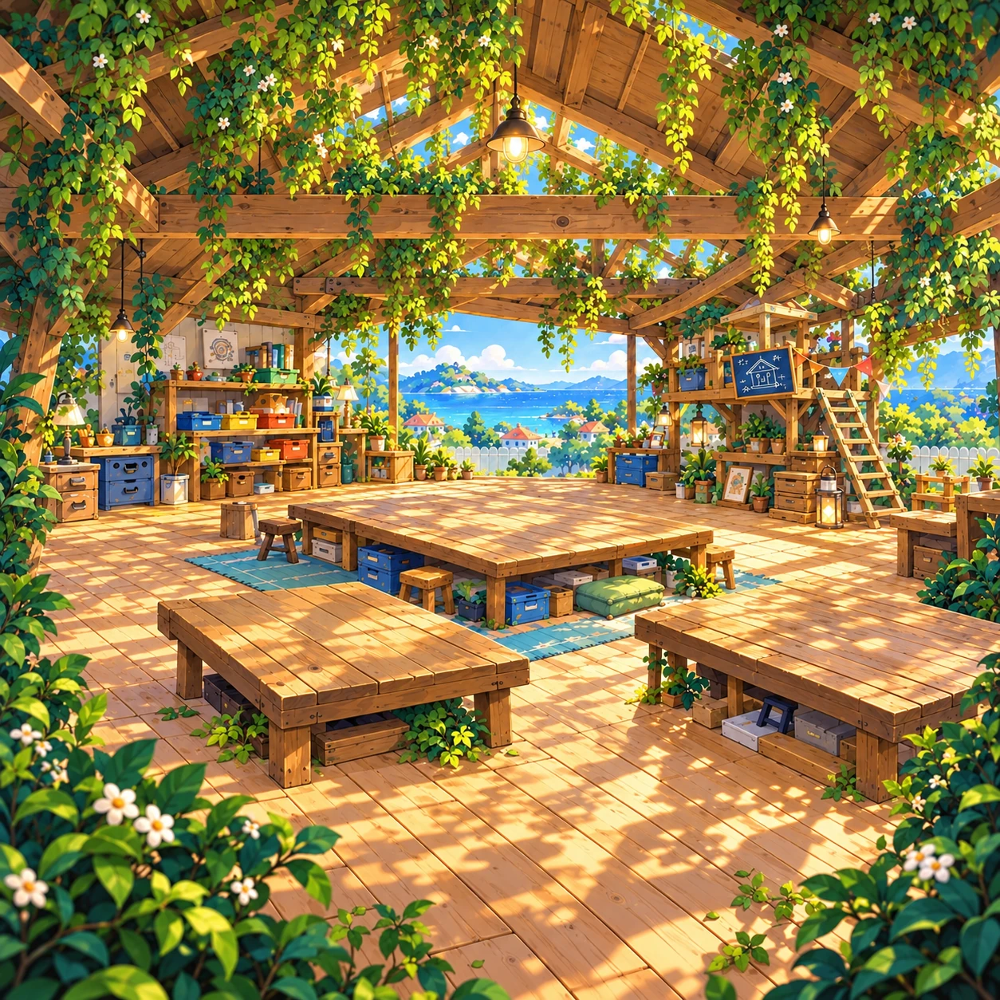
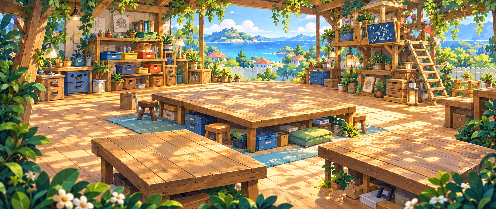
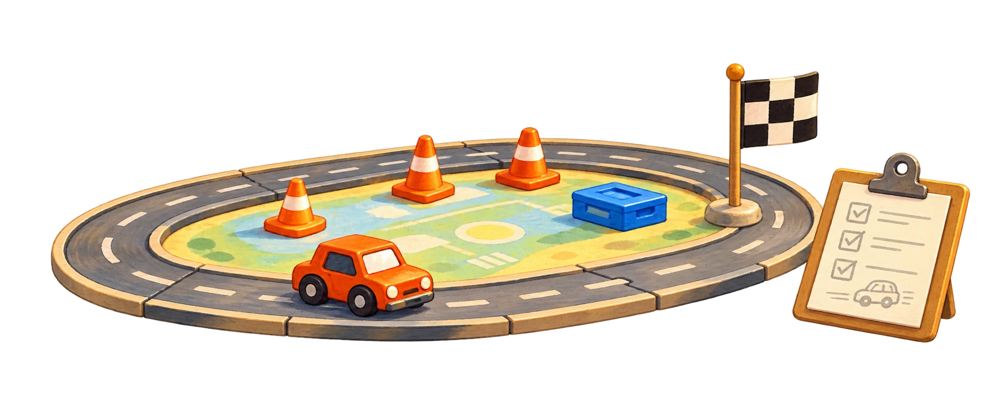
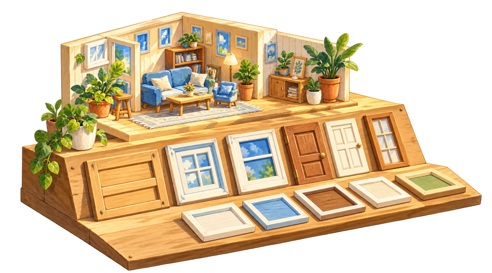
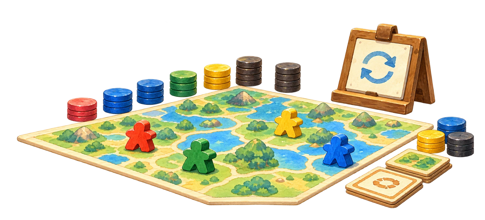
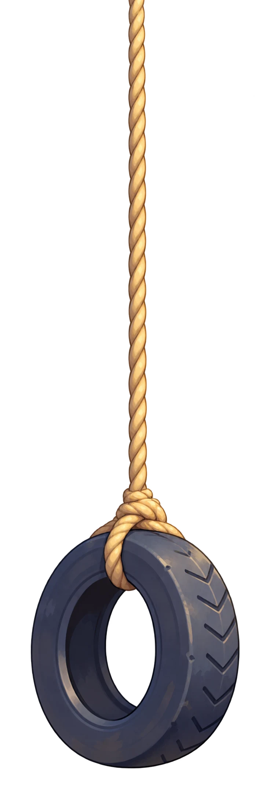
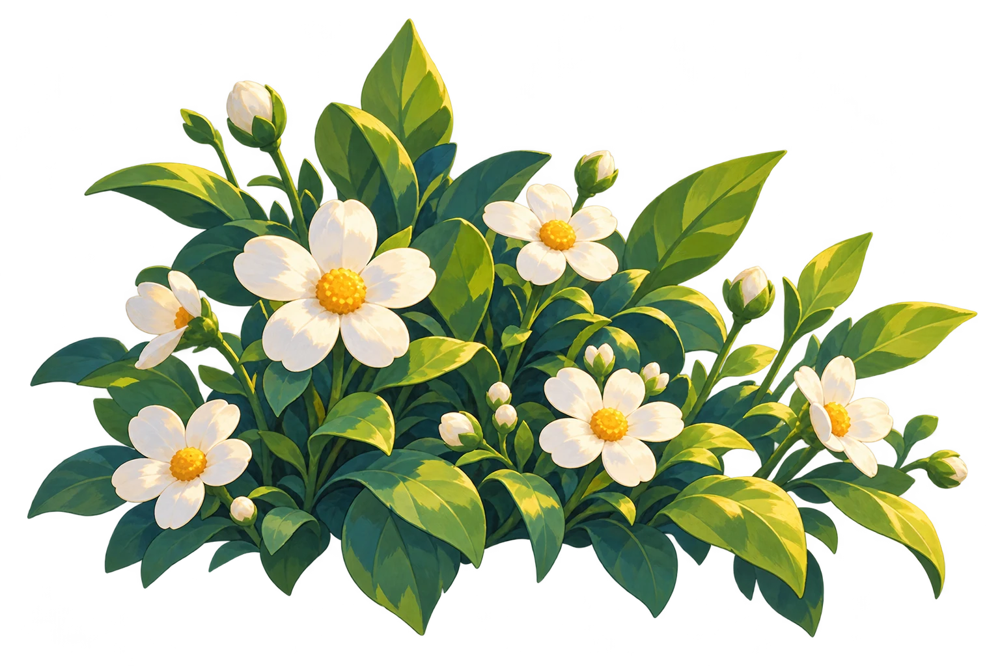

项目演示需要 JavaScript。你仍可查看 PDF 简历，或通过 邮箱联系我。
多点想象，多点尝试，还有多点热爱。
比较典型的实践派。习惯从工作中的具体问题出发，想办法、做验证，再把有效的方案落到项目里。
遇到反复出现的问题，会想想能不能做个工具、改改流程，让下次更顺畅。也喜欢和同事讨论、尝试、分享。
期待一个技术氛围开放、支持探索，也重视实践的团队。给新想法留一点空间，然后一起把它做出来。






